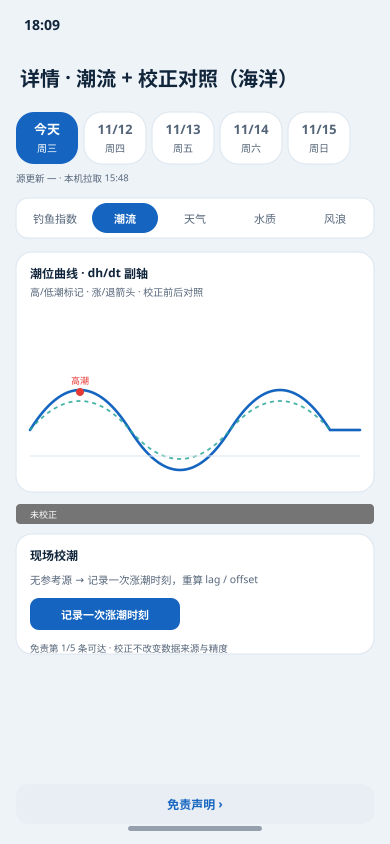
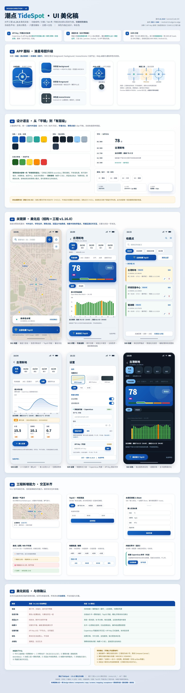
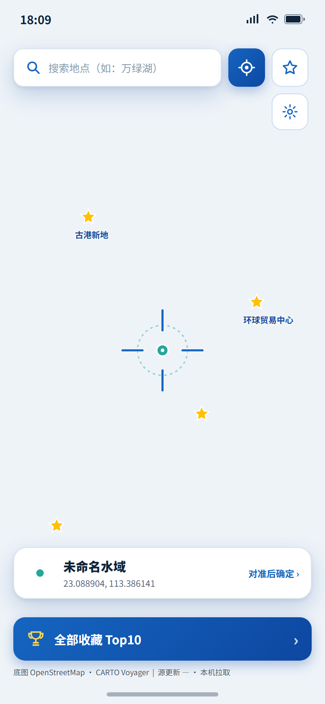
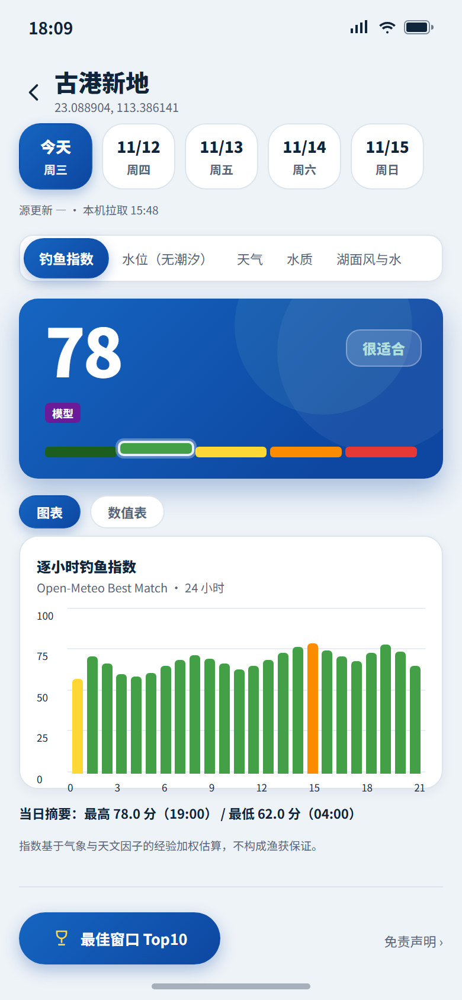
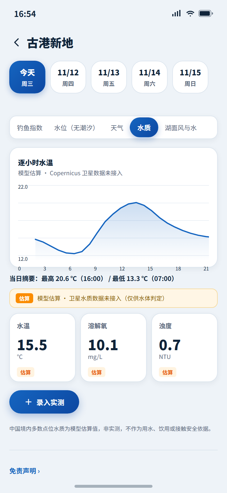
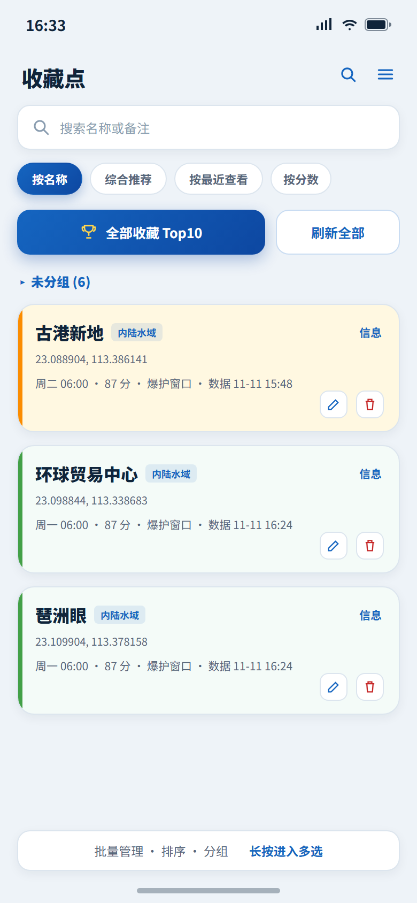
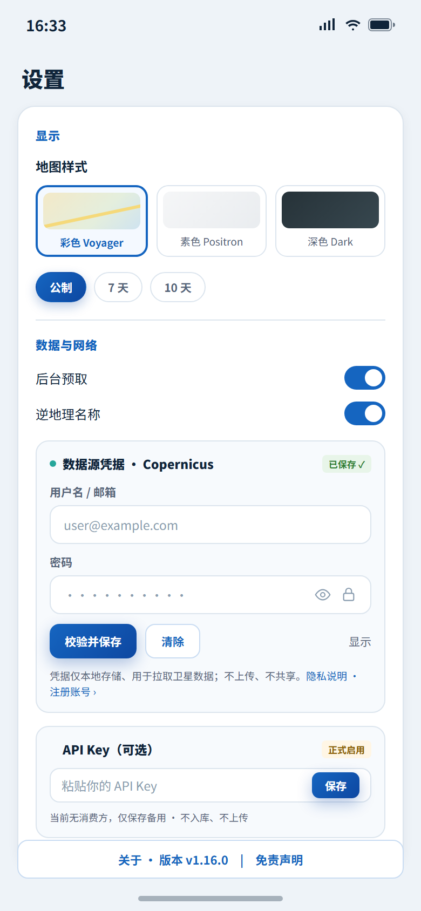
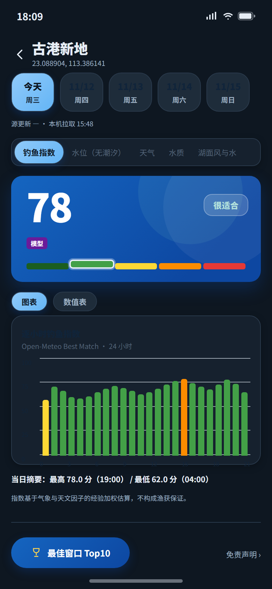

02 · 补充屏 v3 风格结构稿（🔶 按规格推导）
S03–S07 复用 S02 屏骨架，按 screens.json 的层结构与 v3 语言推导，用于表达层级与占位。视觉细节以 01 的 ✅ 基准屏 + design-tokens.json 为准。

子分 / ΠV / 原始输入

内陆降级 + 引导卡

曲线 + 安全摘要

潮高 + 校正对照 + 现场校潮
v3 美化方向整板，含准星三态、薄荷点缀、收藏白卡色带、主卡渐变与深色对照。另有自包含离线整板 assets/board-v3.html（内嵌底图，可单独双击查看）。

这 6 张是 v3 关键屏的 2x 像素基准（780 × 1688 = 390 × 844 dp @2x）。配色、圆角、字阶一律以它们为准；冻结色（五档 / 六徽标 / 4 主色）未改动。






S03–S07 复用 S02 屏骨架，按 screens.json 的层结构与 v3 语言推导，用于表达层级与占位。视觉细节以 01 的 ✅ 基准屏 + design-tokens.json 为准。

母题＝准星（F-1.3 唯一选点真源）× 潮位曲线，与准星 idle 态同源。工程 adaptive icon 五件已落地，本组 SVG 为视觉替换源稿，转 vector drawable 由实现方完成。规格见 app-icon-spec.md。